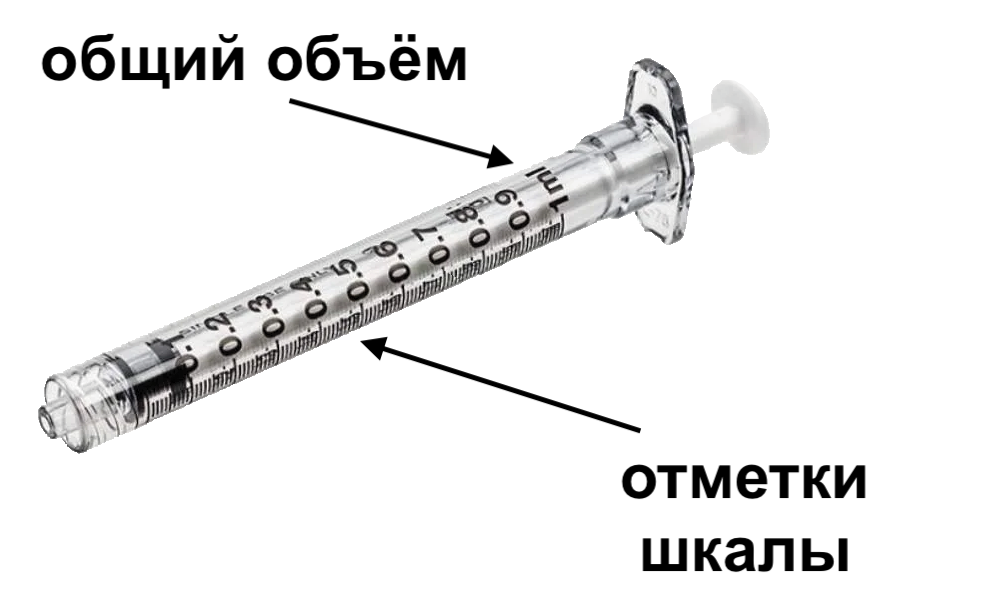
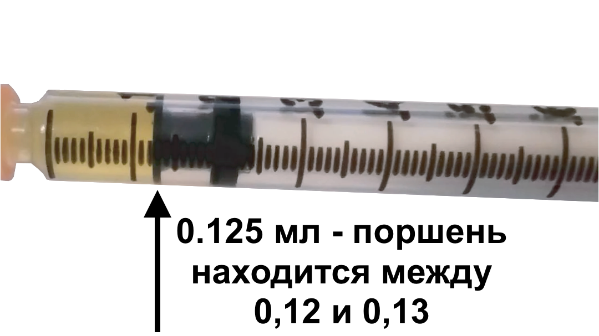
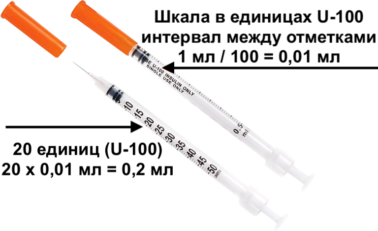

6 основных ошибок при инъекциях
By Aripublished 2026-10-24
Русский перевод, составленный эсмеральдой.
Исходный вариант на английском по ссылке: Top 6 Injection Mistakes.
6 основных ошибок при инъекциях

(и как их избежать)
Неправильное открытие верхушки флакона (… или вовсе оставление её закрытой)
Если верхушка флакона оснащена маленьким металлическим диском, покрывающим пробку, его нужно снять перед тем, как прокалывать пробку иглой…


Но не снимай весь металлический ободок, удерживающий пробку на месте!
Как правильно обнажить пробку:


Чистка флакона подручными средствами
Не чисти верхушку флакона:
- средством для дезинфекции рук
- отбеливателем
- йодом
- водой
- чистым спиртом
ни чем-либо другим, кроме…

чистящих салфеточек, пропитанных этиловым или изопропиловым спиртом 70%!1


Если у тебя закончились чистящие салфетки, лучше просто пропустить чистку флакона.
Прокол пробки соломинкой для питья
Хотя многие руководства рекомендуют иглы калибра 18G для набора препарата из флакона, не используй крупные иглы.
Эти советы исходят из исследований, проведённых в медицинских учреждениях, где медработники делают несколько инъекций в день множеству пациентов.
В этих условиях, так как флаконы очень быстро расходуются, имеет смысл использовать крупные иглы для ускорения набора препарата. Но для транс людей, использующих один флакон в течение нескольких месяцев или даже лет, важно беречь пробку флакона! Флакон с повреждённой пробкой с трудом сможет сохранять содержимое стерильным.
Исследования показывают, что иглы калибра 23G или меньше (т.е., с бо́льшим числом G) наносят значительно меньше повреждений пробке, чем более крупные иглы.2

Запомни: чем больше номер калибра (G), тем она тоньше!
Стерилизация стерильных игл
Да, так показывают в кино.
Это не значит, что так следует делать!
Иглы уже стерильны при открытии упаковки.
Если упаковка не повреждена, иглу можно использовать сразу при открытии. Протирая иглу чем-либо, ты ничего не достигаешь, зато вводишь возможные загрязнения во флакон и в свой организм!


Инсулиновые шприцы, упакованные по несколько штук в пакет, имеют две оранжевые крышки: одна закрывает иглу, другая — поршень. Эти крышки также сохраняют стерильность шприца!

Неправильное чтение шкалы на шприце
Будь внимательней при чтении шкалы шприца. Доза измеряется от верхнего края поршня.


0,1 мл кажется очень небольшим количеством жидкости в большинстве шприцев. Не вводи себе по ошибке в 10 раз больше, чем нужно!
Для тех, кто делает инъекции в объеме 0,1 мл или меньше, существуют шприцы с общей вместимостью 0,5 или 0,3 мл, которые подходят для подкожных инъекций. Такие шприцы позволяют проще и точнее измерять маленькие дозы.

Отметки на инсулиновых шприцах указаны в инсулиновых единицах.
Число после буквы «U» обозначает количество инсулиновых единиц, состовляющих 1 мл.
Например:
На шприце U-100, 100 единиц = 1 мл, 10 единиц = 0,1 мл
На шприце U-40, 40 единиц = 1 мл, 10 единиц = 0,25 мл
Потеря препарата при замене иглы
В иглах и шприцах есть небольшое пространство — так называемое «мёртвое пространство» — из которого поршень не может полностью вытеснить жидкость.
![Изображение, показывающее четыре вида соединений шприцев и игл: (1) Стандартный шприц с обычной отсоединяемой иглой, с большим количеством т.н. «мёртвого пространства» (обычно 92 мкл = 0,092 мл); (2) Модифицированный шприц с обычной отсоединяемой иглой: резиновый поршень с узким наконечником, выступающим в соединение иглы, что позволяет вытолкнуть жидкость из мертвого пространства (уменьшенное количество мёртвого пространства, обычно 59 мкл = 0,059 мл); (3) Стандартный шприц с иглой с низким мёртвым пространством: внутренняя часть соединения иглы имеет узкий наконечник, выступающий в соединение шприца, чтобы заполнить мёртвое пространство (мёртвое пространство от 17 мкл = 0,017 мл); (4) Инсулиновый шприц с низким мёртвым пространством и фиксированной иглой (мёртвое пространство обычно 3 мкл = 0,003 мл).](6-deadspace-diagram-ru.png) Источник: exchangesupplies.org Low Dead Space Injecting Equipment: A Briefing
Источник: exchangesupplies.org Low Dead Space Injecting Equipment: A Briefing
(с русским переводом подписей)
При замене иглы для забора препарата из флакона на иглу для инъекции, не забудь ввести немного воздуха в шприц, прежде чем отделить иглу для забора препарата от шприца, чтобы не потерять часть содержимого! Оставшийся воздух можно ввести в тело после инъекции препарата (т.н. «метод воздушного шлюза»).
Ссылки
- покупка шприцев и игл в разных странах мира (англ.): reddit TransWiki
- руководство по инъекциям (англ.): plume clinic guide - All about injections*
* Примечание: данное руководство рекомендует использовать иглы калибра 18G для забора препарата! Не обращай на это внимание: это может безвозвратно повредить флакон. Помимо этого, руководство является отличным ресурсом.
Why 70% Ethanol is the Star of Sterilization: Mechanisms and Limitations↩︎
Ponto, J. A. (2013). Self-sealing capacity of vial stoppers after multiple needle punctures. Journal of the American Pharmacists Association: JAPhA, 53(1), 58–60. https://doi.org/10.1331/JAPhA.2013.12064↩︎